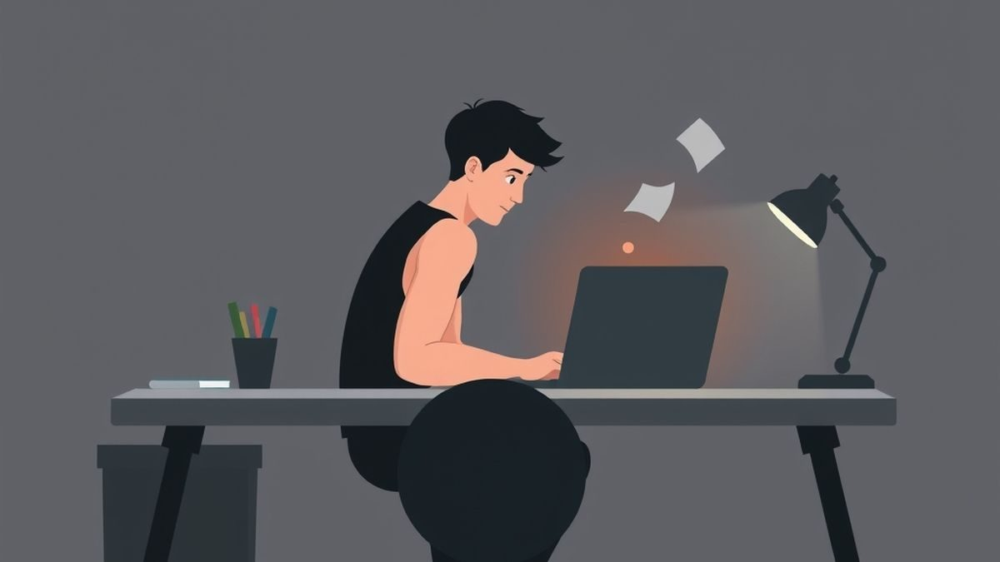
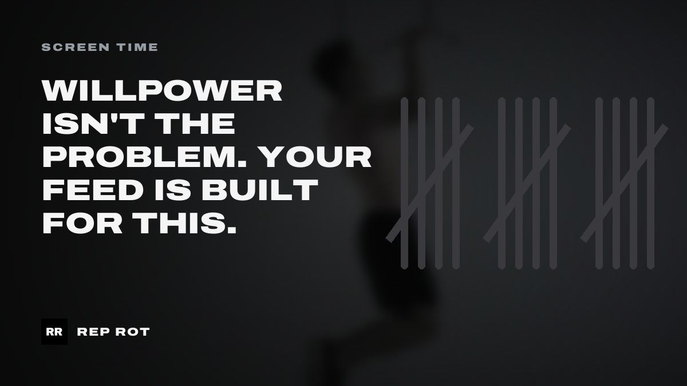
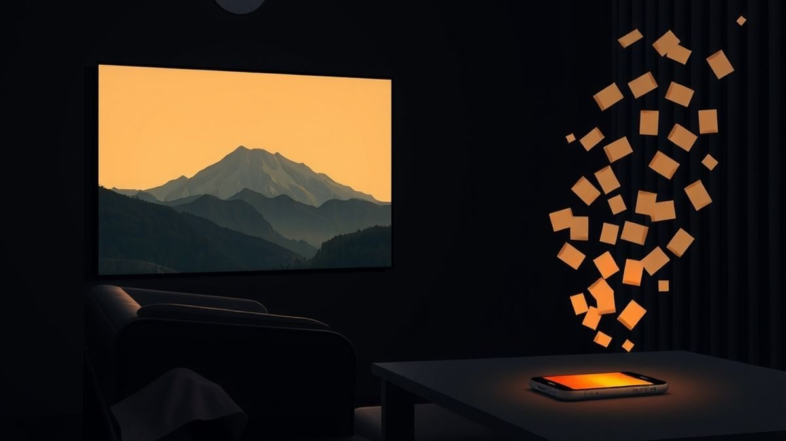

The Rep Rot Blog
Practical guides for spending less time scrolling and more time moving: screen time, habits, bodyweight training and getting out of bed.

Slow Down the Lowering: The Short Daily Workout That Works
Slow eccentric reps make a short daily workout count. What the 5-minute studies found, their honest limits, and a beginner routine you can do today.
 ··10 min read
··10 min read
The 100-Rep Method: Can Bodyweight Build Muscle?
The 100-rep method: one exercise, 100 reps, as few sets as it takes. Why it can build muscle without a gym, the honest limits, and a beginner version.
··9 min read
Dopamine Detox Is the Wrong Frame. Try Friction Instead.
Does a dopamine detox work? Not the way the name says. What the research supports instead: small, permanent friction on the habits that eat your day.
··9 min read
How to Do Your First Pull-Up (An 8-Week Plan From Zero)
Can't do a single pull-up? How to do your first pull-up from zero: hangs, rows, slow negatives and assisted reps, with an 8-week plan and honest timing.
··10 min read
The 10-Rep Rule: Habit Stacking Exercise That Sticks
Habit stacking exercise works when the anchor is exact and the set is tiny. What the research really says, why 10 reps is the rule, and stacks to start.
··10 min read
How to Use iPhone Downtime and Sleep Focus Together
iPhone Downtime and Sleep Focus do different jobs. Here's what each one does in iOS 27 (and iOS 26), how to line them up, and the settings that make them hold.
··10 min read
Your Phone Before Bed Isn't the Problem. Your Phone in Bed Is.
Is using your phone before bed bad? The research says the real damage starts once you're in bed. What the studies show, blue light included, and what to change.
··9 min read
How Long Should You Hold a Plank? Less Than You Think
How long to hold a plank at every level, why short holds with rest beat one long one, what a normal plank time is, easier versions and a 4-week plan.
··8 min read
Bodyweight Squat Form: 6 Steps and the 5 Mistakes to Fix
Bodyweight squat form in six steps, the five mistakes nearly everyone makes and how to fix each, what to do about knees past toes, and easier versions.
··9 min read
Grease the Groove: Get Stronger With Sets You Barely Notice
Grease the groove means small, easy sets spread through your day. How many reps, how often, what the research says, and a simple plan to start today.
··9 min read
How to Do Your First Real Push-Up (A 4-Week Plan)
Can't do one push-up yet? A 4-week plan for push-ups for beginners: a ladder of household surfaces, slow negatives, form fixes and when to move on.
··9 min read
How Many Push-Ups Should You Do a Day?
How many push-ups a day to do, based on one honest test set: a table by level, easier versions, rest days, and what the 40 push-up study really found.
··8 min read
How to Set App Limits on iPhone That Actually Stick
How to set app limits on iPhone in iOS 27 (and iOS 26), why most limits get ignored by day three, and the settings that make them hold when you're tired.
··9 min read
How Long Does It Take to Refocus After a Notification?
How long does it take to refocus after a notification? What the famous 23-minute number really measured, what's unproven, and how to get back faster.
··9 min read
Your Alarm Isn't Too Quiet. Your Bed Is Too Easy.
How to get out of bed in the morning when the alarm keeps losing: why 6 a.m. is the worst time to decide, and a 60-second routine that decides for you.
··7 min read
Willpower Isn't the Problem. Your Feed Is Built for This.
Why you can't stop scrolling even when you want to, and why the answer isn't more discipline: it's changing what happens when the urge hits.
··6 min read
The Phone Is the Enemy of Focus: Brian Chesky's Big-Screen Rule
Airbnb's Brian Chesky says attention span shrinks with screen size. What the research says, and how to use the big-screen rule to focus better.
··5 min read
How to Stop Doomscrolling on iPhone (Without Deleting Your Apps)
A practical setup to stop doomscrolling on iPhone: the Screen Time settings that matter in iOS 27, the friction that actually works, and what to do instead.
··7 min read
How to Stay Consistent With Working Out: Adjust, Don't Miss
Two lifters, two rules for staying consistent with working out: get good at one thing at a time, and on bad days make it easier instead of skipping.
··6 min read
Exercise Snacks: Why One-Minute Workouts Count
Exercise snacks are short bursts of hard effort spread across the day. What the research shows, how to do them at home, and a simple plan to start.
··6 min read